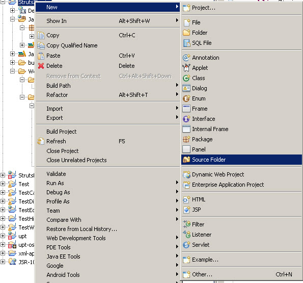

Struts 2 Tutorial Series: Sample Application – Login Module
Welcome to Struts 2 Tutorial series where we will explore how to create web application by using Struts 2.
In this tutorial, we will first make a very simple Login module, then add features of Hibernate and Tiles, Ajax, Interceptor, Validator, etc. Finally, it will be a fully functional Struts 2 web application - "Quick Memo".
Before you get started, you may want to watch a 10-minute video to get a basic idea of how to use Struts 2.
1. Goal of this sample app
Goal: login module.
Finally, it looks like this.

When Login successfully, it shows:
When Login fails, it shows:
2. Tools and Libraries required
Before we start our example, we need several tools and libraries. The following are what I’m using. Of course, you can use higher version. 1) JDK 1.5 or above. 2) Tomcat 6.0 3) Eclipse IDE for Java EE Developers. 4) Struts 2.0.14. JAR files required for this application.
- commons-logging-1.0.4.jar
- freemarker-2.3.8.jar
- ognl-2.6.11.jar
- struts2-core-2.0.12.jar
- xwork-2.0.6.jar
3. Getting Started
Create a Dynamic Web Project.
#notice my project directory is: C:\eclipseworkspace\Struts2Login
Copy the required JAR files to WebContent->WEB-INF->lib folder under project directory. Now, you project should like this.
4. Config web.xml file
Set Struts2 as filter in web.xml file. If you don’t understand why set it as a filter, check out here.
web.xml
<?xml version="1.0" encoding="UTF-8"?> <web-app xmlns:xsi="http://www.w3.org/2001/XMLSchema-instance" xmlns="http://java.sun.com/xml/ns/javaee" xmlns:web="http://java.sun.com/xml/ns/javaee/web-app_2_5.xsd" xsi:schemaLocation="http://java.sun.com/xml/ns/javaee http://java.sun.com/xml/ns/javaee/web-app_2_5.xsd" id="WebApp_ID" version="2.5"> <display-name>Struts2 Login</display-name> <filter> <filter-name>struts2</filter-name> <filter-class>org.apache.struts2.dispatcher.FilterDispatcher</filter-class> </filter> <filter-mapping> <filter-name>struts2</filter-name> <url-pattern>/*</url-pattern> </filter-mapping> <welcome-file-list> <welcome-file>Login.jsp</welcome-file> </welcome-file-list> </web-app> |
5. Create Login Action Class
Note that, the above action class contains two fields, username and password. They will hold values passed from form, and also contains an authenticate() method that will authenticate users. Normally, this can be setup with LDAP or Database. But here for a simple demonstration, we are simply check if username is “admin” and password is “admin”. The authenticate() method returns a string which determines the result page.
LoginAction.java
package com.programcreek.struts2; import com.opensymphony.xwork2.ActionSupport; public class LoginAction extends ActionSupport{ private String username; private String password; public String authenticate() { if (this.username.equals("admin") && this.password.equals("admin")) { return "success"; } else { addActionError(getText("error.login")); //a function from ActionSupport, to get properties values from properties file //we will explore this below. return "error"; } } public String getUsername() { return username; } public void setUsername(String username) { this.username = username; } public String getPassword() { return password; } public void setPassword(String password) { this.password = password; } } |
6. Create ResourceBundle
ResourceBundle is a very useful Java entity that helps separating static contents from source code. It can hold some static messages such as names for form elements. We define an ApplicationResources.properties file for our application. This file should be present in WEB-INF/classes folder.

Now we create a source folder called resources like this.
ApplicationResources.properties
label.username= Username label.password= Password label.login= Login error.login= Invalid Username/Password. Please try again.
7. JSP Pages
JSP files should be put under the WebContent directory.
Login.jsp
<%@ page contentType="text/html; charset=UTF-8"%> <%@ taglib prefix="s" uri="/struts-tags"%> <html> <head> <title>Struts 2 - Login Application</title> </head> <body> <h2>Struts 2 - Login Application</h2> <s:actionerror /> <s:form action="login.action" method="post"> <s:textfield name="username" key="label.username" size="20" /> <s:password name="password" key="label.password" size="20" /> <s:submit method="execute" key="label.login" align="center" /> </s:form> </body> </html> |
Welcome.jsp
<%@ page contentType="text/html; charset=UTF-8"%> <%@ taglib prefix="s" uri="/struts-tags"%> <html> <head> <title>Welcome Page - Struts 2 - Login Application</title> </head> <body> <h2>Congratulations, <s:property value="username" />!</h2> Welcome to Struts 2 world. </body> </html> |
8. struts.xml file
Create struts.xml file under resources directory like the ApplicationResources.properties file.
struts.xml
<?xml version="1.0" encoding="UTF-8" ?> <!DOCTYPE struts PUBLIC "-//Apache Software Foundation//DTD Struts Configuration 2.0//EN" "http://struts.apache.org/dtds/struts-2.0.dtd"> <struts> <constant name="struts.enable.DynamicMethodInvocation" value="false" /> <constant name="struts.devMode" value="false" /> <constant name="struts.custom.i18n.resources" value="ApplicationResources" /> <package name="default" extends="struts-default" namespace="/"> <action name="login" method="authenticate" class="com.programcreek.struts2.LoginAction"> <result name="success">Welcome.jsp</result> <result name="error">Login.jsp</result> </action> </package> </struts> |
9. Done
Run the project now.

Next Step
Once a user is authenticated, the website content will be displayed. Normally, the content is from database, so the next step is to make a simple database app with Hibernate.
-> Back to Index.
References:
Freemarker
<pre><code> String foo = "bar"; </code></pre>
-
Nancy
-
tia
-
John
-
prateek
-
nitin
-
sathish
-
a
-
narendra
-
sweety
-
krishnan
-
appu
-
Naveen
-
Tarkeshwar
-
Vineet
-
kiran kumar
-
Its is really help full
-
Rajeswari
-
Rajesh
-
kiruthika
-
sandeep
-
w
-
Tom Tshitangano
-
Jagdish
-
Phani
-
praneet
-
tara
-
JSP Tutorials